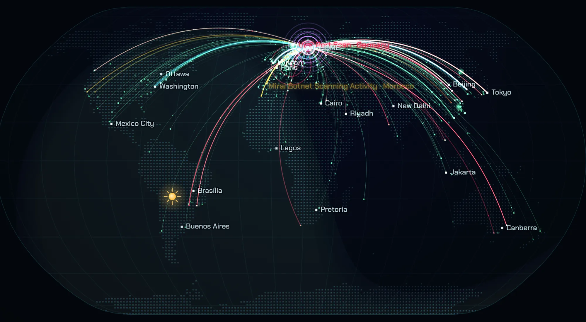
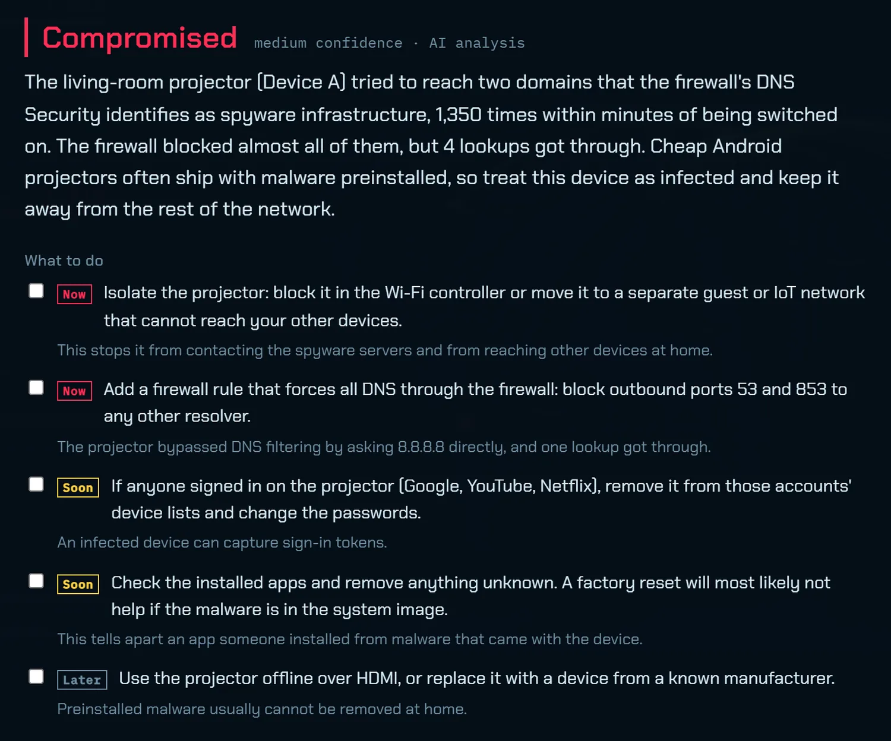
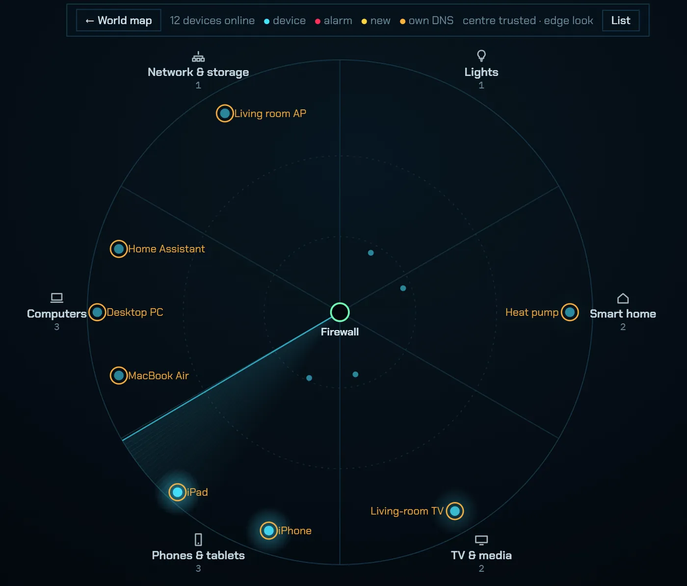

Homes
Smart TVs, kids' tablets, game consoles and cheap gadgets from online marketplaces. You find out when one of them starts talking to places it shouldn't.
Watching your network, around the clock
Northwatch watches your network day and night, raises the alarm only when something real happens and explains it in plain language. You don't need to be a security expert. It gives you the facts, you make the call.
Affordable monthly subscription. Runs on a small box in your own network.

Today
1,994 attacks stopped
Scans and break-in attempts from 41 countries. All blocked. Nothing for you to do.
Alarm, just now
Living-room projector may be infected
It tried to reach a spyware server 1,350 times. Your firewall blocked almost all of them.
Do now: take it off the network.
Map recorded from a demo home network. Messages shortened from the real alarm.
Who it's for
Large companies pay for a security operations centre that watches their network around the clock. Homes and small businesses face the same attacks, from the same places, without anyone watching. Northwatch closes that gap.
Smart TVs, kids' tablets, game consoles and cheap gadgets from online marketplaces. You find out when one of them starts talking to places it shouldn't.

The shop, café, clinic or office without an IT department. Card terminals, cameras and guest Wi-Fi on one network, watched while you run the business.

Teams that take security seriously but can't justify a 24/7 security team or a full-time specialist. Northwatch does the watching; your IT person gets the evidence.
Built and priced for large organisations, with contracts to match.
A full salary, and still only one person who sleeps at night.
A monthly subscription that watches around the clock and tells you, in plain words, when to act.
How it works
Northwatch comes as one small box that you plug into your network. From then on it keeps watch day and night, and you hear from it only when something needs you.
Everything that comes in and goes out of your network, and what your devices do inside it. Quietly, around the clock.
Thousands of knocks on the door every day are normal, and they are stopped. A device in your home talking to criminals is not. Northwatch knows the difference.
What happened, on which device and what to do, in plain words. You decide. One click and the device is off your network.
A real case
A cheap Android projector joined a home Wi-Fi on a Sunday evening. Within seconds it started trying to contact a spyware server, twice a second, without pause. The firewall blocked almost all of them. Northwatch noticed the pattern and raised the alarm.


Plain language
Every alarm comes with the whole story: which device, what it did, when and how often. If you want, an AI reads it through and explains what most likely happened and how sure it can be.
The AI is optional. Before anything is sent, you see exactly what would leave your network, and details about your home or office are hidden.
Your network at a glance
Phones, computers, TVs and smart home gear, each in its own group. Northwatch learns what is normal for your network and points at what isn't.

What it keeps an eye on
Break-in attempts from the internet, stopped and shown on a map. You can look whenever you're curious.
A TV, camera or gadget that suddenly talks to places it shouldn't.
You know the moment something new joins your network, with a name you can recognise.
If someone on your network starts looking around where they shouldn't, you hear about it.
When it goes down, and how reliable it really is over a day, a week and a month.
On your screen, your phone and your smart home. If nobody reacts to a serious alarm, Northwatch calls you.
Works with your firewall
Most business firewalls, and many home ones, can share what they see. Northwatch understands them whatever the brand, and we keep adding more. Tell us which one you have and we'll make sure it works.
For your IT person: Northwatch reads the firewall's standard syslog. No software on your computers, no changes to how your network works.
Early access
Northwatch is in early access for homes and small businesses in Finland. Tell us which firewall you have and we'll set up a demo on your own network.